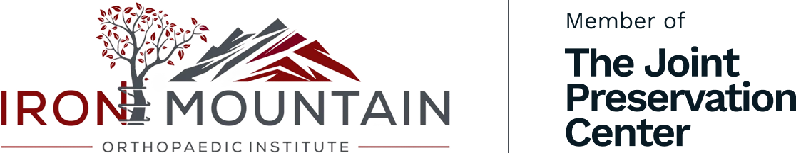
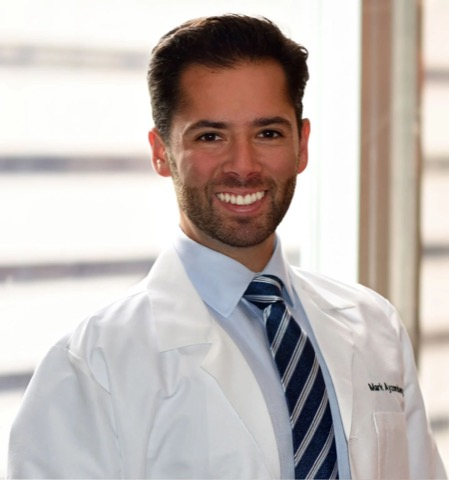
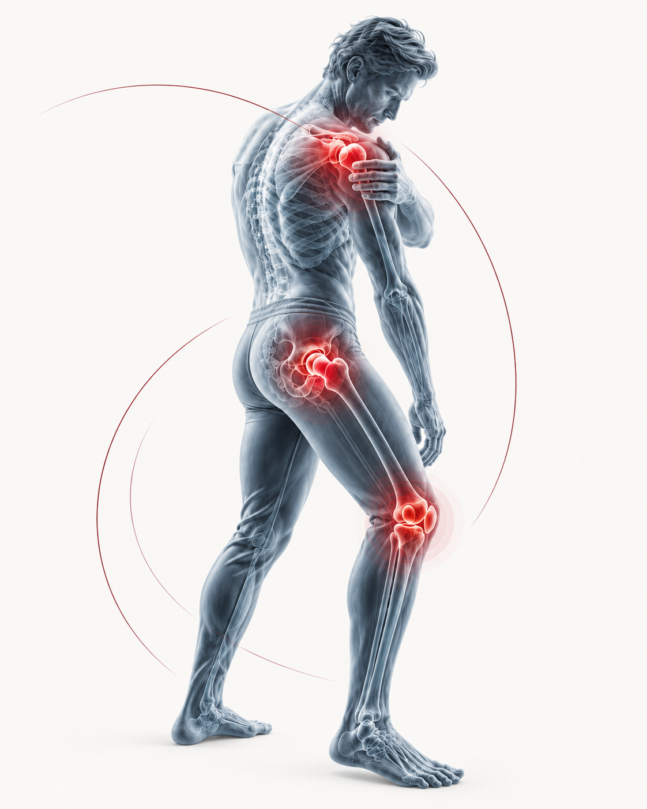
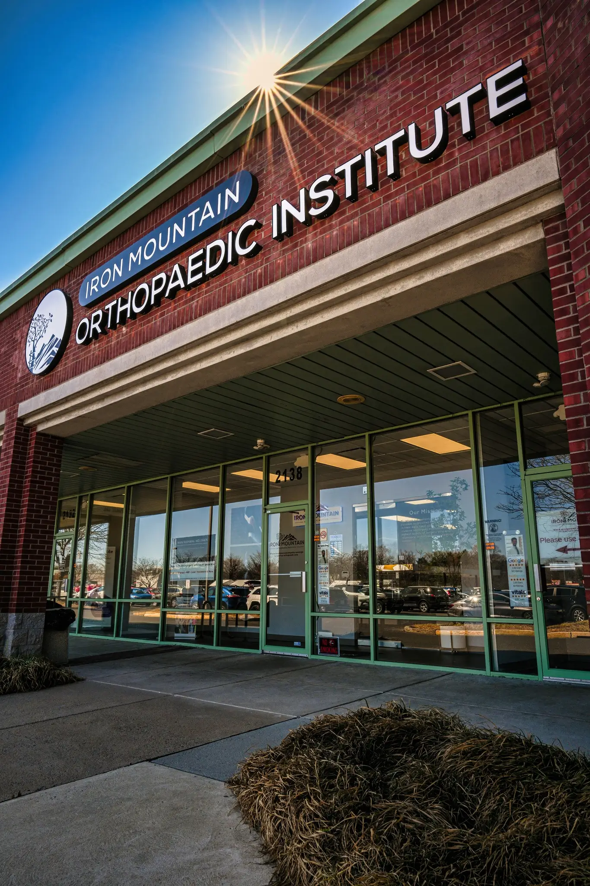

01
He reads your MRI with you.
Dr. Ayzenberg goes over your imaging with you, then plans the repair around exactly what it shows.

Iron Mountain Orthopaedic Institute
See Dr. Mark Ayzenberg, a top-rated orthopaedic surgeon in Huntingdon Valley. Get the right repair and a clear plan to get back to work and sport. Most procedures are minimally invasive and outpatient, and Dr. Ayzenberg sees you at every follow-up.
A few questions to start, or call (215) 821-7059.


When waiting is not working
You've done the physical therapy. The cortisone shot wore off. Now the MRI says tear, or a doctor has already said surgery.
Pain you put up with for years often means damage that keeps adding up. It's time to see the surgeon who'd do the repair.
You're probably past the point of waiting it out if:
How Dr. Ayzenberg and the Iron Mountain Team Get You Back
The plan begins with what your imaging shows and what you need to get back to.
Dr. Ayzenberg goes over your imaging with you, then plans the repair around exactly what it shows.
Most of his repairs are arthroscopic, meaning they're done through incisions under a centimeter long. Less cutting usually means less pain and a quicker start on rehab.
Tell him what you need to get back to, like a full workday or your Saturday game. Your rehab is built around it, with checkpoints along the way.
The surgeon who operated is the one checking your progress, so the person adjusting your rehab knows exactly what was repaired.
Typical recovery ranges
Hear it from patients:
Typical ranges. Individual results vary.
Patient and professional feedback
“From the office staff to the doctor himself, this practice was an absolute joy to deal with. After surgery I am pain free and walking as well as I did before my injury.”
“My shoulder is doing great after 12 weeks post op. Can not recommend him high enough!”
“This is my 2nd major surgery he's done on me and I wouldn't go to anyone else. Complete trust.”
“Dr. Ayzenberg is by far the best and the most trustworthy Orthopedic doctor and surgeon that I know. As a Physical Therapist, he is always my first recommendation for all my friends and family…”
Individual results vary.
Meet the surgeon
Dr. Ayzenberg started Iron Mountain Orthopaedic Institute so patients get longer visits and real time with their surgeon.
He trained in sports medicine, arthroscopy and reconstruction, the same kinds of repairs he does today, at the Southern California Orthopaedic Institute, after his residency at Einstein in Philadelphia. He's board-certified in both orthopaedic surgery and sports medicine.
Patients bring him the cases that need the most experience: massive rotator cuff tears, complex shoulder reconstructions, and repairs that didn't hold the first time. One flew 6,000 miles for a rare latissimus tendon repair.
Repair expertise
He doesn't do knee or hip replacements.
Your consultation
In one visit, you'll know what's wrong and how it can be repaired. You'll leave with:
About your joint, your coverage and how far you are from Huntingdon Valley.
If your coverage and distance work, you choose a time on the calendar. Our team books your visit on that call.
And any reports you have.
Questions before you book
Yes. If you go ahead with surgery, he performs it.
Yes. Bring your scans and reports. He'll give you his own opinion and his own plan for the repair.
You'll get a visit date on your call with our team. Want to be seen sooner? His physician assistant, Jamie Hermance, can often see you first, and Dr. Ayzenberg reviews your plan either way.
Usually less than people expect. With arthroscopic repairs, the worst of it typically passes within days.
Yes. He does revision surgery, which means redoing a repair that didn't hold. Bring your operative report and imaging, and he'll tell you what he sees and what can be done.
Age alone doesn't decide it. He looks at the tear, your health and what you want to get back to, then tells you whether surgery makes sense for you.
Huntingdon Valley
Your first visit is an in-person exam with the team at 2138 County Line Rd, Huntingdon Valley, PA 19006, just outside Philadelphia.

In-person orthopaedic care
Bring your imaging, reports and questions. Dr. Ayzenberg will explain whether surgery is appropriate and what recovery would involve.
Start with the joint that's giving you trouble.
The sooner you're seen, the sooner you can plan your way back. Rated 5.0 across 400+ Google reviews, with the same surgeon from your first visit to your last follow-up.
Your first visit is an in-person exam. Whether surgery is right for you is decided with Dr. Ayzenberg at that visit. Individual results and recovery vary.